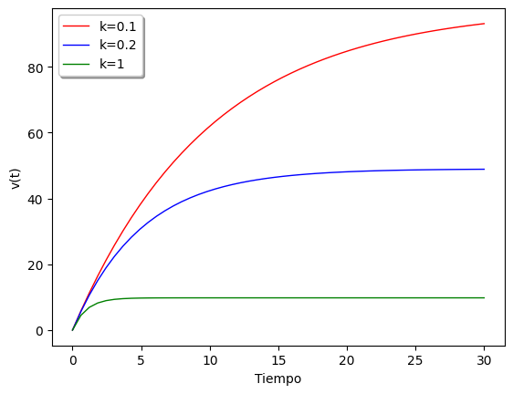
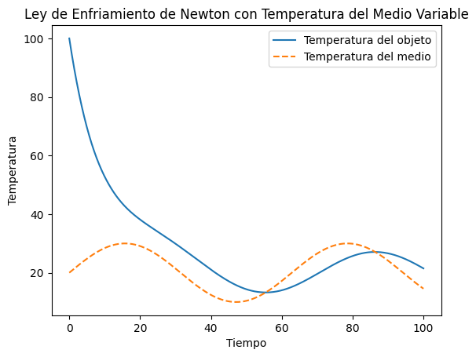
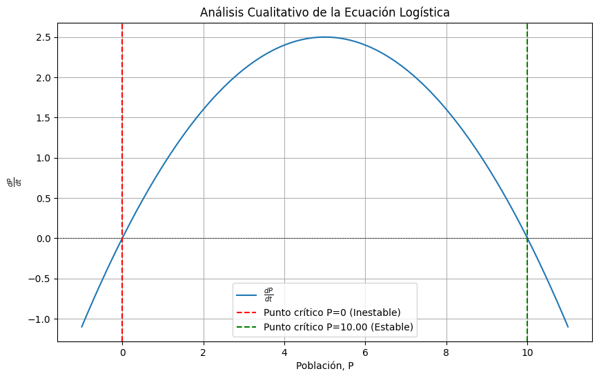

from scipy.integrate import odeint
import numpy as np
import matplotlib.pyplot as plt
# función que entrega dv/dt
def modelo(v,t,k):
dvdt = g - k * v/m
return dvdt
# condición inicial
v0 = 0
#parámetros
g = 9.8
m = 1
# valores de tiempo
t = np.linspace(0,30)
# soluciones EDO para distintos k
k = 0.1
v1 = odeint(modelo,v0,t,args=(k,))
k = 0.2
v2 = odeint(modelo,v0,t,args=(k,))
k = 1
v3 = odeint(modelo,v0,t,args=(k,))
# gráfico
plt.plot(t,v1,'r',linewidth=1,label='k=0.1')
plt.plot(t,v2,'b',linewidth=1,label='k=0.2')
plt.plot(t,v3,'g',linewidth=1,label='k=1')
plt.xlabel('Tiempo')
plt.ylabel('v(t)')
plt.legend(shadow=True)
plt.show()

from sympy import symbols, Function, dsolve
# Símbolos
t, g, k , m, v0= symbols("t, g, k, m, v0")
# v es función del tiempo
v = Function('v')(t)
# Derivada de v
dvdt = v.diff(t)
# Ecuación diferencial
eq = dvdt - g + k*v/m
# Solución de la EDO con la condición inicial v(0)=v0
dsolve(eq, v, ics={v.subs(t, 0): v0})
\[\displaystyle v{\left(t \right)} = \frac{g m}{k} + \frac{\left(- g m + k v_{0}\right) e^{- \frac{k t}{m}}}{k}\]
import numpy as np
import matplotlib.pyplot as plt
from scipy.integrate import solve_ivp
# Parámetros de la ley de enfriamiento de Newton
k = -0.1 # Constante de enfriamiento
# Función que define la temperatura del medio variable en el tiempo
def T_m(t):
return 20 + 10 * np.sin(0.1 * t)
# Definición de la EDO para la ley de enfriamiento de Newton
def Newton(t, T):
return k * (T - T_m(t))
# Condición inicial
T0 = 100 # Temperatura inicial del objeto
# Intervalo de tiempo para la simulación
t_span = (0, 100)
t_eval = np.linspace(t_span[0], t_span[1], 1000)
# Resolver la EDO
sol = solve_ivp(Newton, t_span, [T0], t_eval=t_eval)
# Graficar los resultados
plt.plot(sol.t, sol.y[0], label='Temperatura del objeto')
plt.plot(sol.t, T_m(sol.t), label='Temperatura del medio', linestyle='dashed')
plt.xlabel('Tiempo')
plt.ylabel('Temperatura')
plt.legend()
plt.title('Ley de Enfriamiento de Newton con Temperatura del Medio Variable')
plt.show()

import numpy as np
import matplotlib.pyplot as plt
# Parámetros de la ecuación
a = 1.0 # Tasa de crecimiento
b = 0.1 # Tasa de competencia
# Función para la derivada dP/dt
def dP_dt(P):
return a * P - b * P**2
# Encontrar puntos críticos
P_critical = [0, a / b]
# Analizar la estabilidad de los puntos críticos
stability = []
for P in P_critical:
derivative_at_P = a - 2 * b * P
if derivative_at_P < 0:
stability.append("Estable")
elif derivative_at_P > 0:
stability.append("Inestable")
else:
stability.append("Indeterminado")
# Graficar el campo de pendientes
P_vals = np.linspace(-1, a / b + 1, 400)
dP_vals = dP_dt(P_vals)
plt.figure(figsize=(10, 6))
plt.plot(P_vals, dP_vals, label=r'$\frac{dP}{dt}$')
plt.axhline(0, color='black', linewidth=0.5, linestyle='--')
plt.axvline(P_critical[0], color='red', linestyle='--', label=f'Punto crítico P={P_critical[0]} ({stability[0]})')
plt.axvline(P_critical[1], color='green', linestyle='--', label=f'Punto crítico P={P_critical[1]:.2f} ({stability[1]})')
plt.xlabel('Población, P')
plt.ylabel(r'$\frac{dP}{dt}$')
plt.title('Análisis Cualitativo de la Ecuación Logística')
plt.legend()
plt.grid(True)
plt.show()
